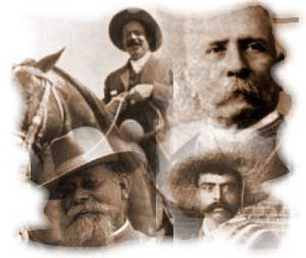
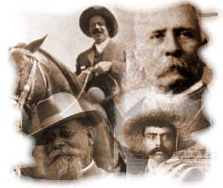

MOVIMIENTO DE LOS HERMANOS SERDAN 1910
Inicia en Puebla la rebelión maderista dirigida por Aquiles Serdán
18 de Noviembre de 1910
El “Plan de San Luís”, proclamado por Francisco I. Madero, había señalado el 20 de noviembre de 1910 para levantarse en armas, pero dos días antes, Miguel Cabrera, jefe de policía de Puebla, acompañado de un pelotón de gendarmes intenta entrar a la casa de Aquiles Serdán, ubicada en Santa Clara 4, para catearla en busca de armas y propaganda. Ya en el mes de septiembre pasado, las autoridades habían cateado su casa y ante los rumores del levantamiento del día veinte, el jefe de la policía local llega con orden de cateo más minucioso; pero él, sus hermanos Carmen y Máximo, resistieron la orden.
Los hermanos Serdán y otras dieciocho personas más habían acumulado armas y parque para participar en la lucha revolucionaria y deciden enfrentar a los gendarmes a tiros. Filomena del Valle, esposa de Aquiles y Carmen Serdán, su hermana, salen al balcón de la casa con las armas en las manos y gritan a la gente que se ha reunido atraída por la balacera: “¡Poblanos! Los que están allí van a morir por el pueblo, vengan a ayudarles; aquí hay armas. ¡Viva la República!”.
El ataque de los gendarmes dura varias horas y el gobernador Mucio P. Martínez tiene que llamar a más de mil soldados para allanar la casa. Cuando se les acaba el parque los Serdán se rinden. Los soldados entran a la casa y se encuentran con algunas mujeres y los cuerpos sin vida de algunos hombres. Carmen Serdán, Carmen Alatriste, Filomena del Valle de Serdán y los que no murieron en el combate, son encarcelados. Carmen y Filomena son acusadas de recargar las armas, remitidas a la cárcel de La Merced y más tarde al Hospital de San Pedro.
Aquiles se esconde en una especie de sótano cavado en la sala de la casa, en la que apenas cabe un hombre.
En la madrugada del día siguiente, Aquiles toserá y será descubierto por el soldado que está de guardia, quien le hará dos disparos: uno en el cráneo y otro en la sien. El gobernador de Puebla, ordenará que su cuerpo sea exhibido en la plaza principal como escarmiento para quienes intenten acudir al llamado de Madero. Por este hecho, se considera que la Revolución Mexicana dio inicio en Puebla, con la represión a los hermanos Serdán.
Aquiles Serdán Alatriste nació el 1º de noviembre de 1876 en la ciudad de Puebla. Sus padres fueron Manuel Serdán y Doña Carmen Alatriste. Ingresó al Colegio Franco-Anglo-Mexicano, pero por razones económicas interrumpió sus estudios. Trabajó como distribuidor de calzado en los estados de Puebla y Tlaxcala, en los que trabó contacto con obreros textiles que después organizaría en contra de la dictadura porfirista. En 1908 apoyó la candidatura del general Bernardo Reyes para la vicepresidencia en el Partido Nacional Democrático. Al salir Reyes del país, se afilió al movimiento antireeleccionista de Francisco I. Madero y fundó el club político “Luz y Progreso”, así como el periódico “No Reelección”, en el que escribió su hermana Carmen con el pseudónimo de “Marcos Serrato”. Por estas publicaciones contra la dictadura de Porfirio Díaz fue encarcelado en distintas ocasiones. En 1909, con la presencia de Madero fundó el partido Antirreeleccionista local. En abril de 1910, votó por la candidatura de Madero y Francisco Vázquez Gómez para presidente y vicepresidente de la República, respectivamente, durante la Convención Nacional del Partido celebrada en la ciudad de México. Al mes siguiente, organizó la gira electoral en Puebla del candidato Madero. Al decidirse el levantamiento, viajó con su hermana Carmen a San Antonio, Texas, a entrevistarse con Madero para preparar la rebelión y después a la capital de la República a comprar armas y municiones. Al momento del ataque vivía en una casa de dos pisos; en el primero habitaban su madre y sus hermanos Carmen y Máximo; en la planta baja se encontraba su recámara y un pequeño despacho. Por decreto del presidente Abelardo L. Rodríguez, fue nombrado Benemérito de la Patria el 11 de noviembre de 1932 y su nombre fue grabado con letras de oro en los muros de la Cámara de Diputados.
Carmen Serdán, nacida en 1873, será liberada al triunfo de Madero y después del cuartelazo de Victoriano Huerta, participará en la Junta Revolucionaria de Puebla. Será recibida por el Primer Jefe del Ejército Constitucionalista Venustiano Carranza y continuará en el movimiento revolucionario: distribuirá armas, será correo e imprimirá proclamas; después será enfermera en los hospitales constitucionalistas. Al triunfo de Carranza se retirará a la vida privada y morirá en Puebla, Puebla, el 21 de agosto de 1948. El 18 de noviembre siguiente, en el aniversario del sacrificio de su hermano Aquiles, el Congreso de los Estados Unidos Mexicanos, decretará que también su nombre sea inscrito con letras de oro, en los muros del Salón de Sesiones de la Cámara de Diputados.


 
